Wednesday, May 4
You can also download a PDF copy of this lecture.
Generalized Additive Models
Consider models of the form \[ g[E(Y)] = \beta_0 + f(x) \] or \[ g[E(Y)] = \beta_0 + f_1(x_1) + f_2(x_2) \] or \[ g[E(Y)] = \beta_0 + f(x_1,x_2) \] or \[ g[E(Y)] = \beta_0 + f_1(x_1) + f_2(x_2,x_3), \] where \(g\) is a link function and \(f\), \(f_1\), and \(f_2\) are functions. Linear and generalized linear models are special cases of GAMs. But the term GAM usually refers to cases where the functions of the explanatory variables are specified to be flexible but smooth functions. Splines are frequently used for these functions.
Splines
A spline can be viewed a couple of different ways.
A function made up of several polynomial functions that join at a set of knots.
Example: A cubic spline for a linear model with knots \(\zeta_1\) and \(\zeta_2\) can be written as \[ E(Y) = \begin{cases} \delta_0 + \delta_1 x + \delta_2 x^2 + \delta_3 x^3, & \text{if $x < \zeta_1$}, \\ \delta_0 + \delta_1 x + \delta_2 x^2 + \delta_3 x^3 + \delta_4(x-\zeta_1)^3, & \text{if $\zeta_1 \le x < \zeta_2$} \\ \delta_0 + \delta_1 x + \delta_2 x^2 + \delta_3 x^3 + \delta_4(x-\zeta_1)^3 + \delta_5(x-\zeta_2)^3, & \text{if $\zeta_2 \le x$}. \end{cases} \] Here is cubic spline as a regression model.
library(MASS) # for the mcycle data library(splines) # for the bs function m <- lm(accel ~ bs(times, knots = c(20,40)), data = mcycle) summary(m)$coefficientsEstimate Std. Error t value Pr(>|t|) (Intercept) -15.22 16.36 -0.9302 3.541e-01 bs(times, knots = c(20, 40))1 86.03 28.38 3.0318 2.947e-03 bs(times, knots = c(20, 40))2 -201.34 20.74 -9.7086 5.256e-17 bs(times, knots = c(20, 40))3 198.96 29.52 6.7404 4.966e-10 bs(times, knots = c(20, 40))4 -110.05 27.77 -3.9630 1.228e-04 bs(times, knots = c(20, 40))5 67.61 29.55 2.2880 2.379e-02d <- data.frame(times = seq(2.4, 57.6, length = 1000)) d$yhat <- predict(m, newdata = d) p <- ggplot(mcycle, aes(x = times, y = accel)) + geom_point() + theme_classic() + labs(x = "Time After Impact (ms)", y = "Head Acceleration (g)") + geom_vline(xintercept = c(20,40), linetype = 3) + geom_line(aes(y = yhat), data = d) plot(p)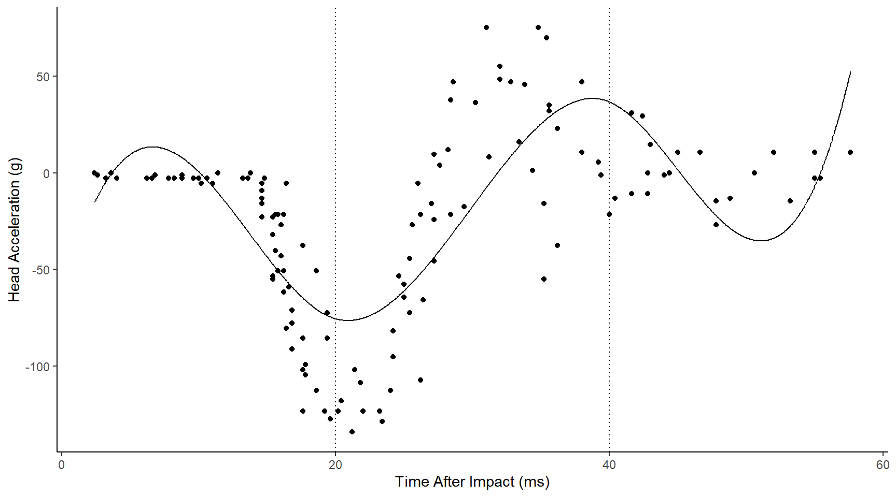
A function that is a weighted average of a set of basis functions such that \[ f(x) = \sum_j \delta_j b_j(x), \] where \(b_j(x)\) is the \(j\)-th basis function and \(\delta_j\) is a parameter. The spline shown above can be written in terms of five basis functions. 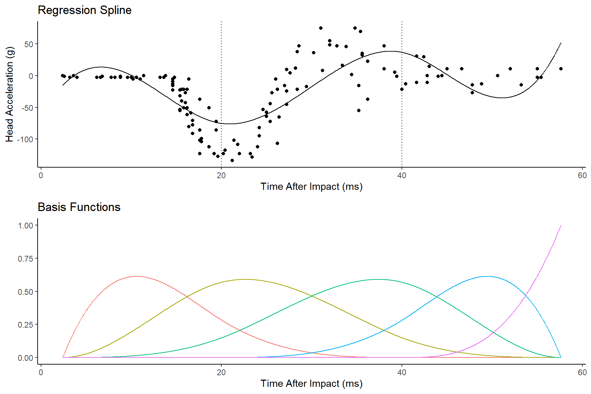 So the model can be written as \[ E(Y) = \beta_0 + \sum_{j=1}^5\delta_jb_j(x) = \beta_0 + \beta_1 x_1^* + \beta_2 x_2^* + \beta_3 x_3^* + \beta_4 x_4^* + \beta_5 x_5^*, \] where \(\delta_j = \beta_j\) and \(x_j^* = b_j(x)\). Because this is still a (generalized) linear model, it is still quite tractable computationally and theoretically (provided we treat the number and placement of knots as well as the form of the functions as known).
Spline Complexity
The spline can be made more flexible by adding more knots or basis functions. Adding more knots or basis functions makes the spline more flexible, but potentially too flexible. This is a bias-variance trade-off.
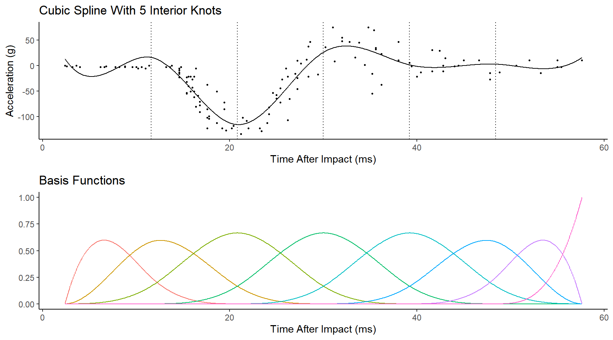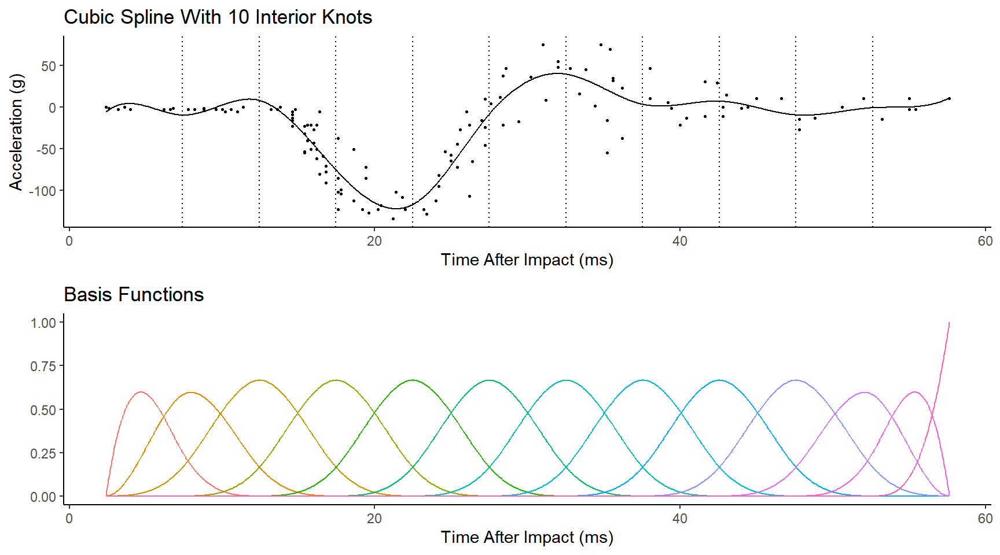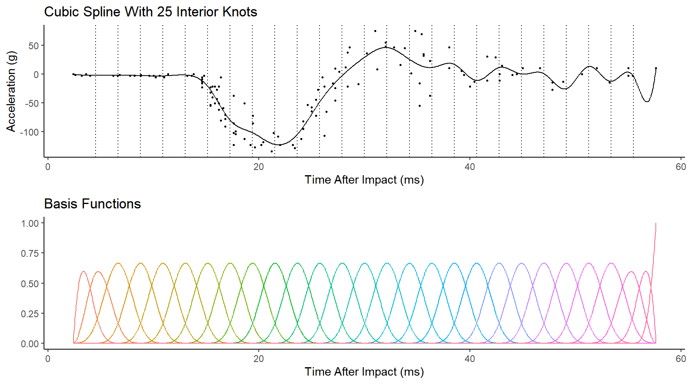 In principle we could use cross-validation or a related technique (e.g. AIC) to try to identify a good trade-off. But a better approach is to use penalization/regularization. ## Penalized Splines
Instead of trying to select the number of knots or basis functions, we could specify a “generous” number of knots/functions and introduce a penalty for “wiggliness” in the estimation. Suppose we have the model \[ E(Y_i) = \beta_0 + f(x_i), \] where \(f\) is a spline such that \[ f(x_i) = \sum_j \delta_j b_j(x_i). \] Then using (weighted) least squares we can try to minimize \[ \sum_{i=1}^n w_i(y_i - \hat{y}_i)^2 + \lambda h(f). \] where \(\lambda \ge 0\) and \(h\) is a function that measures the “wiggliness” of the function \(f\). One reasonable measure of “wiggliness” is to integrate over the second derivative of \(f\) such that \[ h(f) = \! \int f''(x)^2 dx. \] Fortunately this function can be written in a relatively simple way so that it is relatively easy to compute and solve the (penalized) least squares problem. The control over the flexibility/wiggliness of the spline is then through \(\lambda\). As \(\lambda\) increases \(f\) approaches a line, but as \(\lambda\) approaches zero then \(f\) becomes increasingly flexible/wiggly.
Example: Using the gam function from
the mgcv package allows us to control the wiggliness
through the sp argument. Here is “maximum wiggliness”.
library(mgcv) # for the gam and supporting functions
knots <- seq(2.4, 57.6, length = 27)
m <- gam(accel ~ s(times, bs = "bs", k = length(knots), sp = 0),
data = mcycle, knots = list(x = knots))
d <- data.frame(times = seq(2.4, 57.6, length = 1000))
d$yhat <- predict(m, newdata = d)
p <- ggplot(mcycle, aes(x = times, y = accel)) + theme_classic() +
geom_point() + labs(x = "Time After Impact (ms)", y = "Acceleration (g)") +
geom_line(aes(y = yhat), data = d) + geom_vline(xintercept = knots, linetype = 3)
plot(p)
Here is the estimated model with sp = 10.
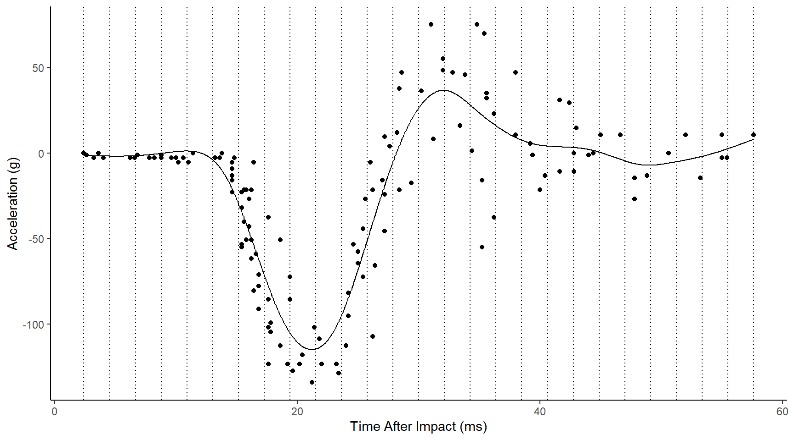
Here is the estimated model with sp = 1000.
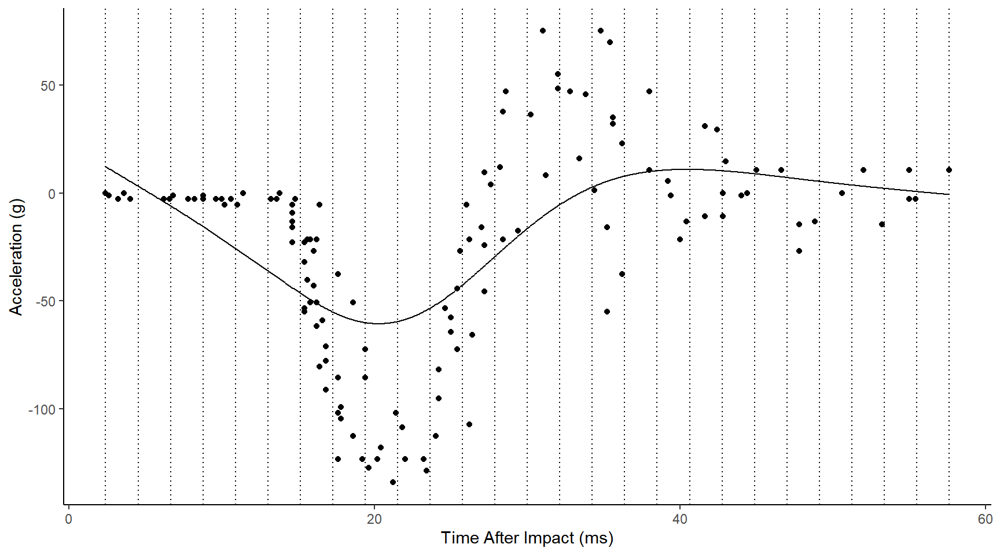
Here is the estimated model with sp = 100000 (nearly
minimum wiggliness).
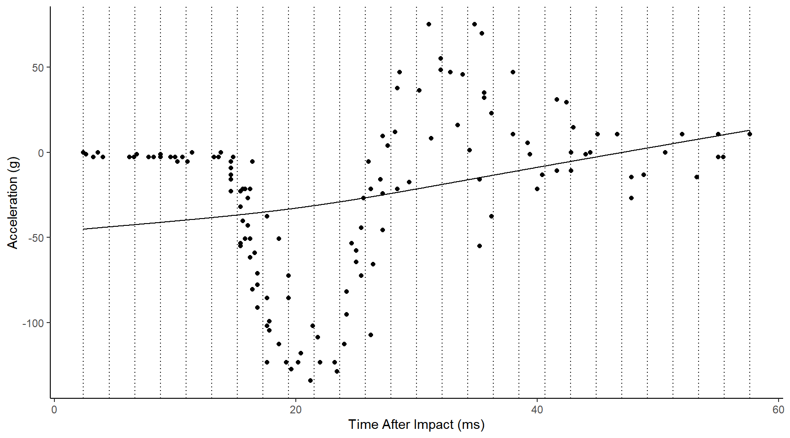
The mgcv package gives the user access to a wide
variety of types of splines and ways to modify them. But it also
provides “automatic” cross-validation and selection of \(\lambda\) using a generalized
cross-validation (GCV) measure.
Example: Consider again the mcycles
data. Here we will use the default settings.
m <- gam(accel ~ s(times), data = mcycle)
summary(m)
Family: gaussian
Link function: identity
Formula:
accel ~ s(times)
Parametric coefficients:
Estimate Std. Error t value Pr(>|t|)
(Intercept) -25.55 1.95 -13.1 <2e-16 ***
---
Signif. codes: 0 '***' 0.001 '**' 0.01 '*' 0.05 '.' 0.1 ' ' 1
Approximate significance of smooth terms:
edf Ref.df F p-value
s(times) 8.69 8.97 53.5 <2e-16 ***
---
Signif. codes: 0 '***' 0.001 '**' 0.01 '*' 0.05 '.' 0.1 ' ' 1
R-sq.(adj) = 0.783 Deviance explained = 79.8%
GCV = 545.78 Scale est. = 506 n = 133d <- data.frame(times = seq(2.4, 57.6, length = 1000))
d$yhat <- predict(m, newdata = d)
p <- ggplot(mcycle, aes(x = times, y = accel)) + theme_classic()
p <- p + geom_point() + labs(x = "Time After Impact (ms)", y = "Acceleration (g)")
p <- p + geom_line(aes(y = yhat), data = d)
p <- p + geom_vline(xintercept = knots, linetype = 3)
plot(p)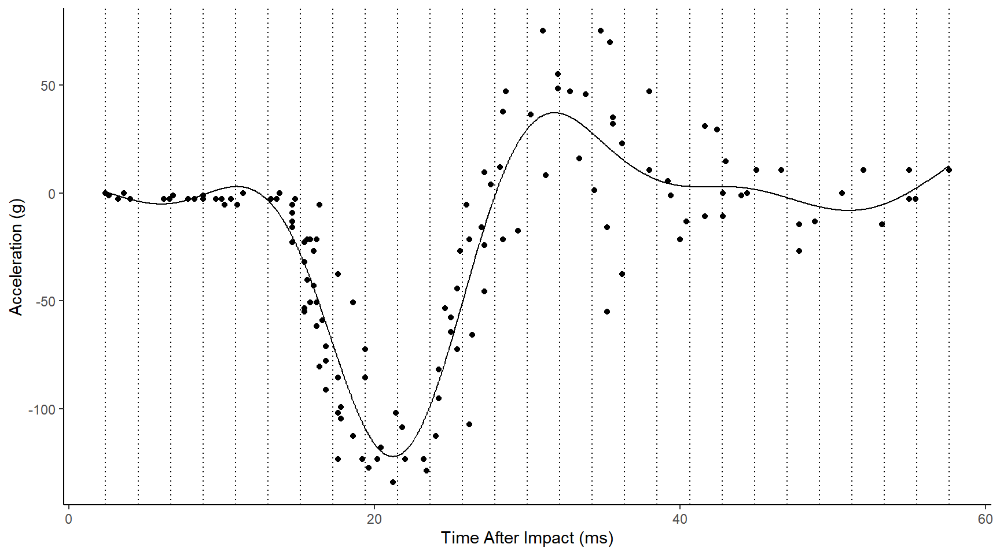
Example: Consider the bone data that
shows relative bone mineral density by age and sex.
bone <- read.table("http://faculty.washington.edu/jonno/book/spinalbonedata.txt", header = TRUE)
m <- gam(spnbmd ~ s(age), data = bone)
d <- expand.grid(sex = c("fem","mal"), age = seq(9, 26, length = 1000))
d$yhat <- predict(m, newdata = d)
p <- ggplot(bone, aes(x = age, y = spnbmd)) +
geom_point(aes(color = sex), alpha = 0.25) + theme_classic() +
geom_line(aes(color = sex, group = idnum), size = 0.5, alpha = 0.25) +
theme(legend.position = c(0.8,0.8)) +
labs(x = "Age (years)", color = "Sex",
y = "Relative Spinal Bone Mineral Density") +
geom_line(aes(y = yhat), data = d)
plot(p)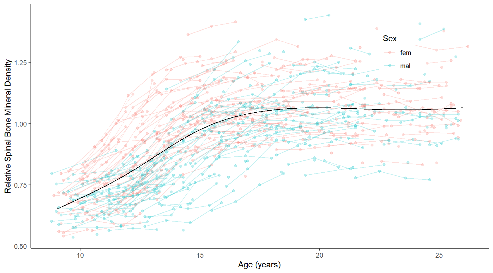
m <- gam(spnbmd ~ sex + s(age), data = bone)
d <- expand.grid(sex = c("fem","mal"), age = seq(9, 26, length = 1000))
d$yhat <- predict(m, newdata = d)
p <- ggplot(bone, aes(x = age, y = spnbmd)) +
geom_point(aes(color = sex), alpha = 0.25) + theme_classic() +
geom_line(aes(color = sex, group = idnum), size = 0.5, alpha = 0.25) +
theme(legend.position = c(0.8,0.8)) +
labs(x = "Age (years)", color = "Sex",
y = "Relative Spinal Bone Mineral Density") +
geom_line(aes(y = yhat, color = sex), data = d)
plot(p)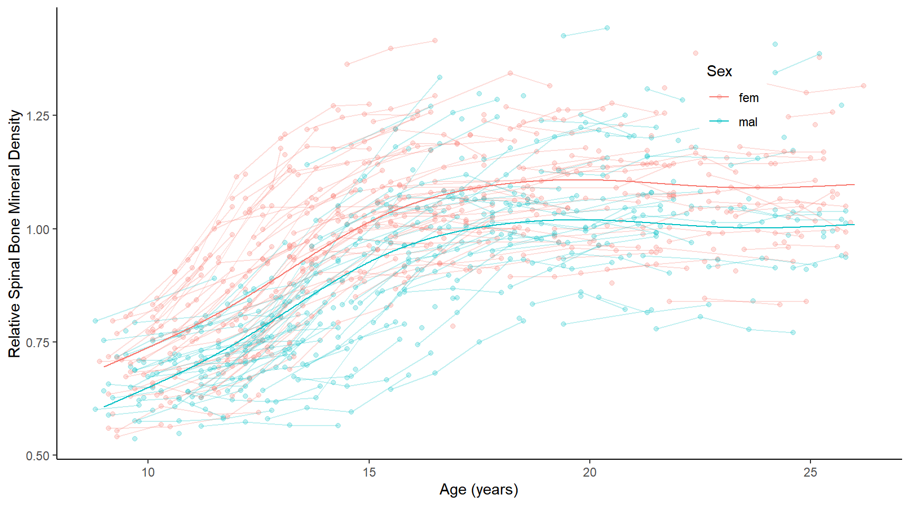
m <- gam(spnbmd ~ sex + s(age, by = factor(sex)), data = bone)
d <- expand.grid(sex = c("fem","mal"), age = seq(9, 26, length = 1000))
d$yhat <- predict(m, newdata = d)
p <- ggplot(bone, aes(x = age, y = spnbmd)) +
geom_point(aes(color = sex), alpha = 0.25) + theme_classic() +
geom_line(aes(color = sex, group = idnum), size = 0.5, alpha = 0.25) +
theme(legend.position = c(0.8,0.8)) +
labs(x = "Age (years)", color = "Sex",
y = "Relative Spinal Bone Mineral Density") +
geom_line(aes(y = yhat, color = sex), data = d)
plot(p) Example: Consider the growth data of female and male
children in the
Example: Consider the growth data of female and male
children in the children data frame from the
npregfast package. Here I am adding a confidence band
to each function.
library(npregfast)
m <- gam(height ~ sex + s(age, by = factor(sex)), data = children)
d <- expand.grid(age = seq(5, 19, length = 1000),
sex = c("female","male"))
d$yhat <- predict(m, newdata = d)
d$se <- predict(m, newdata = d, se.fit = TRUE)$se.fit
d$lower <- d$yhat - 2*d$se
d$upper <- d$yhat + 2*d$se
p <- ggplot(children, aes(x = age, y = height)) + theme_classic() +
geom_point(aes(color = sex), size = 0.25, alpha = 0.25) +
geom_line(aes(y = yhat, color = sex), data = d) +
geom_ribbon(aes(x = age, ymin = lower, ymax = upper,
fill = sex, y = NULL), data = d, color = NA, alpha = 0.25) +
labs(x = "Age (years)", y = "Height (cm)", color = "Sex") +
theme(legend.position = c(0.9,0.2)) +
scale_x_continuous(breaks = seq(5, 19, by = 1)) + guides(fill = "none")
plot(p)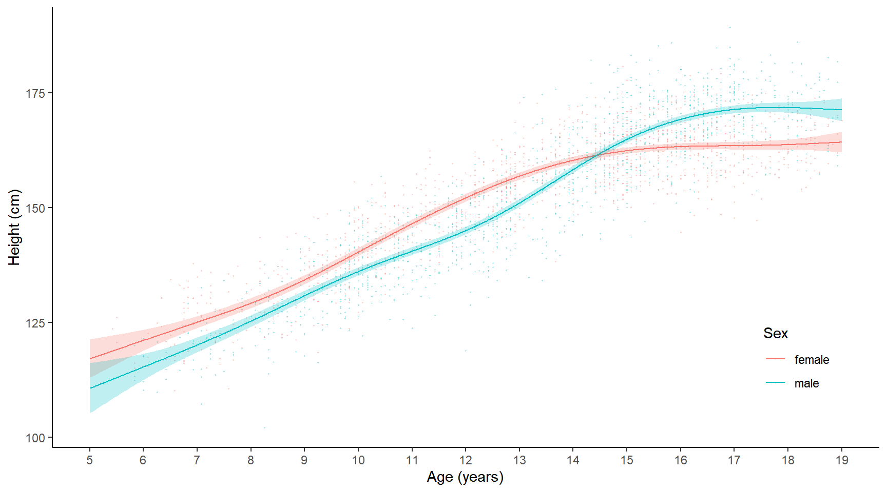
The scam package can be used to estimate shape-constrained generalized additive models (e.g., monotonic and/or concave or convex).
library(scam)
library(blmeco)
data(anoctua)
m <- scam(PA ~ s(elevation, k = 12, bs = "cv", m = 2), family = binomial, data = anoctua)
d <- data.frame(elevation = seq(50, 650, length = 100))
d$yhat <- predict(m, newdata = d, type = "response")
p <- ggplot(anoctua, aes(x = elevation, y = PA)) + theme_minimal() +
geom_rug(data = subset(anoctua, PA == 0), alpha = 0.25, sides = "b") +
geom_rug(data = subset(anoctua, PA == 1), alpha = 0.25, sides = "t") +
geom_hline(yintercept = c(0, 1), alpha = 0.5) +
labs(x = "Elevation (meters)", y = "Probability of Presence") +
scale_x_continuous(breaks = seq(100, 700, by = 50)) +
geom_line(aes(y = yhat), data = d)
plot(p)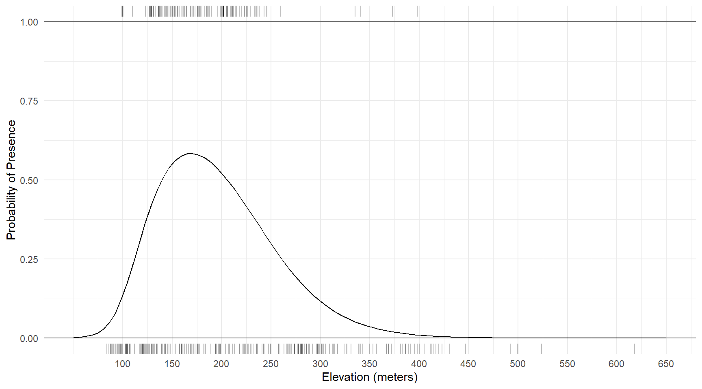
Example: Multiple explanatory variables can be “smoothed” in a GAM. For example, consider the model \[ E(Y) = \beta_0 + f_1(x_1) + f_2(x_2), \] where \(\beta_0 = 5\), \(f_1(x) = \log(x_1)\), and \(f_2(x_2) = 0.05x_2^2\). But suppose we don’t know the functions \(f_1\) and \(f_2\) but instead estimate them from the data.
set.seed(123)
d <- expand.grid(x1 = seq(1, 5, length = 100), x2 = seq(1, 5, length = 100))
d$y <- with(d, 5 + log(x1) + 0.05 * x2^2 + rnorm(nrow(d)))
m <- gam(y ~ s(x1) + s(x2), data = d)
plot(m, select = 1)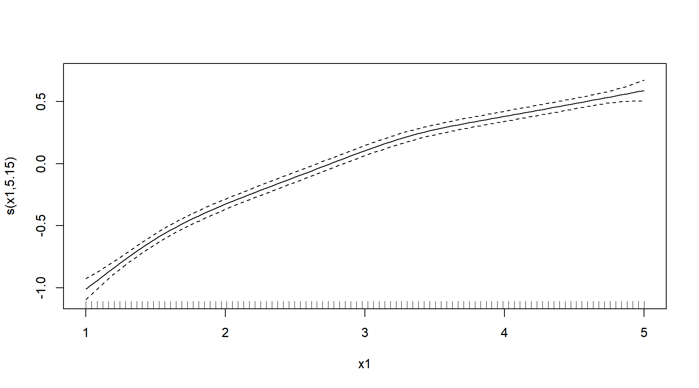
plot(m, select = 2)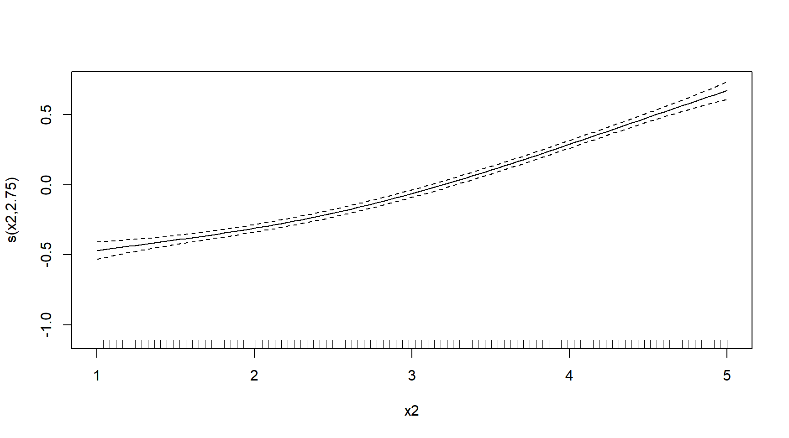 Example: How about a GAM for an “analysis of covariance”?
library(faraway)
m <- gam(longevity ~ activity + s(thorax), data = fruitfly)
summary(m)
Family: gaussian
Link function: identity
Formula:
longevity ~ activity + s(thorax)
Parametric coefficients:
Estimate Std. Error t value Pr(>|t|)
(Intercept) 62.04 2.12 29.21 < 2e-16 ***
activityone 2.01 3.01 0.67 0.505
activitylow -7.34 2.98 -2.46 0.015 *
activitymany 4.03 3.03 1.33 0.186
activityhigh -20.47 3.03 -6.76 5.8e-10 ***
---
Signif. codes: 0 '***' 0.001 '**' 0.01 '*' 0.05 '.' 0.1 ' ' 1
Approximate significance of smooth terms:
edf Ref.df F p-value
s(thorax) 2.86 3.57 32.1 <2e-16 ***
---
Signif. codes: 0 '***' 0.001 '**' 0.01 '*' 0.05 '.' 0.1 ' ' 1
R-sq.(adj) = 0.643 Deviance explained = 66.3%
GCV = 116.92 Scale est. = 109.51 n = 124d <- expand.grid(activity = levels(fruitfly$activity), thorax = c(0.6,1))
d$yhat <- predict(m, newdata = d, type = "response")
p <- ggplot(fruitfly, aes(x = thorax, y = longevity)) + theme_minimal() +
geom_point() + facet_wrap(~ activity, ncol = 5) +
labs(x = "Thorax Length (mm)", y = "Longevity (days)") +
geom_line(aes(y = yhat), data = d)
plot(p)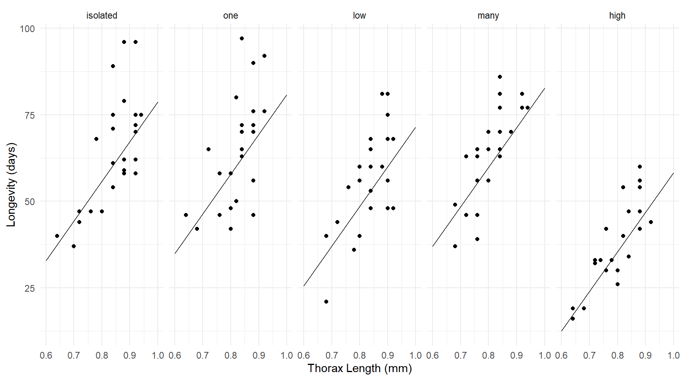 Still fairly linear though!